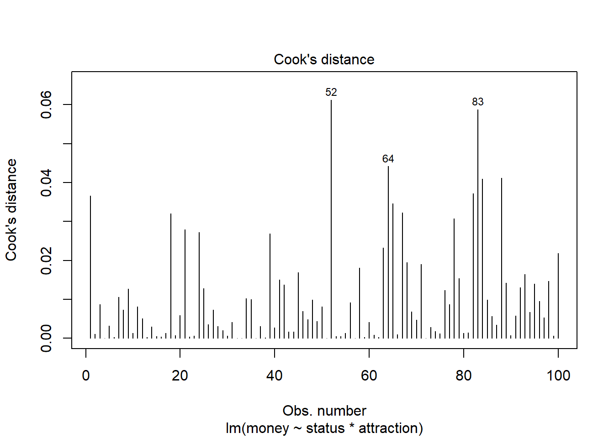
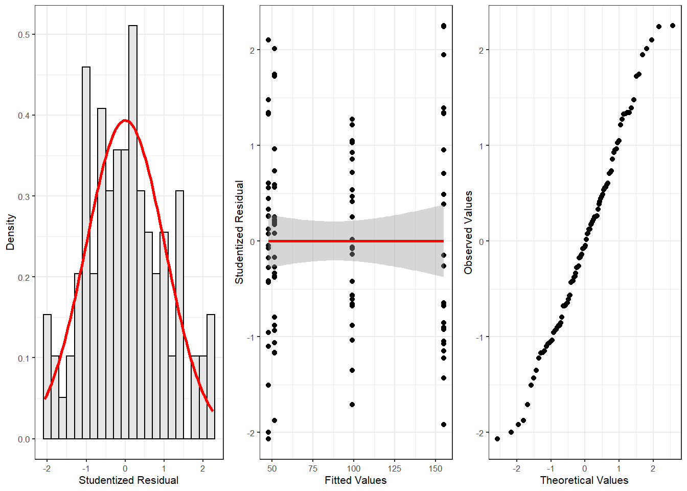

Week 9 Multiple and Logistic Regression
This week, we continue with regression analyses and expand on last week by including multiple predictors and by using a regression to analyse a nominal dependent variable.
Preparation and session set up
This tutorial is based on R. If you have not installed R or are new to it, you will find an introduction to and more information how to use R here. For this tutorials, we need to install certain packages from an R library so that the scripts shown below are executed without errors. Before turning to the code below, please install the packages by running the code below this paragraph. If you have already installed the packages mentioned below, then you can skip ahead and ignore this section. To install the necessary packages, simply run the following code - it may take some time (between 1 and 5 minutes to install all of the libraries so you do not need to worry if it takes some time).
# install
install.packages("Boruta")
install.packages("car")
install.packages("emmeans")
install.packages("effects")
install.packages("flextable")
install.packages("ggplot2")
install.packages("ggpubr")
install.packages("Hmisc")
install.packages("knitr")
install.packages("lme4")
install.packages("MASS")
install.packages("mclogit")
install.packages("MuMIn")
install.packages("nlme")
install.packages("ordinal")
install.packages("rms")
install.packages("robustbase")
install.packages("sjPlot")
install.packages("stringr")
install.packages("tibble")
install.packages("dplyr")
install.packages("vcd")
install.packages("vip")
# install klippy for copy-to-clipboard button in code chunks
install.packages("remotes")
remotes::install_github("rlesur/klippy")Now that we have installed the packages, we activate them as shown below.
# set options
options(stringsAsFactors = F) # no automatic data transformation
options("scipen" = 100, "digits" = 12) # suppress math annotation
# load packages
library(dplyr)
library(Boruta)
library(car)
library(effects)
library(emmeans)
library(flextable)
library(ggfortify)
library(ggplot2)
library(ggpubr)
library(Hmisc)
library(knitr)
library(lme4)
library(MASS)
library(mclogit)
library(MuMIn)
library(nlme)
library(ordinal)
library(rms)
library(robustbase)
library(sjPlot)
library(stringr)
library(tibble)
library(vcd)
library(vip)
# activate klippy for copy-to-clipboard button
klippy::klippy()Once you have installed R and RStudio and initiated the session by executing the code shown above, you are good to go.
9.1 Multiple Linear Regression
In contrast to simple linear regression, which estimates the effect of a single predictor, multiple linear regression estimates the effect of various predictor (see the equation below). A multiple linear regression can thus test the effects of various predictors simultaneously.
\[\begin{equation} f_{(x)} = \alpha + \beta_{1}x_{i} + \beta_{2}x_{i+1} + \dots + \beta_{n}x_{i+n} + \epsilon \end{equation}\]
There exists a wealth of literature focusing on multiple linear regressions and the concepts it is based on. For instance, there are Achen (1982), Bortz (2006), Crawley (2005), Faraway (2002), Field, Miles, and Field (2012) (my personal favorite), Gries (2021), Levshina (2015), and Wilcox (2009) to name just a few. Introductions to regression modeling in R are Baayen (2008), Crawley (2012), Gries (2021), or Levshina (2015).
The model diagnostics we are dealing with here are partly identical to the diagnostic methods discussed in the section on simple linear regression. Because of this overlap, diagnostics will only be described in more detail if they have not been described in the section on simple linear regression.
EXCURSION
`
A note on sample size and power
A brief note on minimum necessary sample or data set size appears necessary here. Although there appears to be a general assumption that 25 data points per group are sufficient, this is not necessarily correct (it is merely a general rule of thumb that is actually often incorrect). Such rules of thumb are inadequate because the required sample size depends on the number of variables in a given model, the size of the effect and the variance of the effect - in other words, the minimum necessary sample size relates to statistical power (see here for a tutorial on power). If a model contains many variables, then this requires a larger sample size than a model which only uses very few predictors.
Also, to detect an effect with a very minor effect size, one needs a substantially larger sample compared to cases where the effect is very strong. In fact, when dealing with small effects, model require a minimum of 600 cases to reliably detect these effects. Finally, effects that are very robust and do not vary much require a much smaller sample size compared with effects that are spurious and vary substantially. Since the sample size depends on the effect size and variance as well as the number of variables, there is no final one-size-fits-all answer to what the best sample size is.
Another, slightly better but still incorrect, rule of thumb is that the more data, the better. This is not correct because models based on too many cases are prone for overfitting and thus report correlations as being significant that are not. However, given that there are procedures that can correct for overfitting, larger data sets are still preferable to data sets that are simply too small to warrant reliable results. In conclusion, it remains true that the sample size depends on the effect under investigation.`
Despite there being no ultimate rule of thumb, Field, Miles, and Field (2012, 27375), based on Green (1991), provide data-driven suggestions for the minimal size of data required for regression models that aim to find medium sized effects (k = number of predictors; categorical variables with more than two levels should be transformed into dummy variables):
If one is merely interested in the overall model fit (something I have not encountered), then the sample size should be at least 50 + k (k = number of predictors in model).
If one is only interested in the effect of specific variables, then the sample size should be at least 104 + k (k = number of predictors in model).
If one is only interested in both model fit and the effect of specific variables, then the sample size should be at least the higher value of 50 + k or 104 + k (k = number of predictors in model).
You will see in the R code below that there is already a function that tests whether the sample size is sufficient.
9.1.1 Example: Gifts and Availability
The example we will go through here is taken from Field, Miles, and Field (2012). In this example, the research question is if the money that men spend on presents for women depends on the womens attractiveness and their relationship status. To answer this research question, we will implement a multiple linear regression and start by loading the data and inspect its structure and properties.
# load data
mlrdata <- base::readRDS(url("https://slcladal.github.io/data/mld.rda", "rb"))status | attraction | money |
Relationship | NotInterested | 86.33 |
Relationship | NotInterested | 45.58 |
Relationship | NotInterested | 68.43 |
Relationship | NotInterested | 52.93 |
Relationship | NotInterested | 61.86 |
Relationship | NotInterested | 48.47 |
Relationship | NotInterested | 32.79 |
Relationship | NotInterested | 35.91 |
Relationship | NotInterested | 30.98 |
Relationship | NotInterested | 44.82 |
Relationship | NotInterested | 35.05 |
Relationship | NotInterested | 64.49 |
Relationship | NotInterested | 54.50 |
Relationship | NotInterested | 61.48 |
Relationship | NotInterested | 55.51 |
The data set consist of three variables stored in three columns. The first column contains the relationship status of the present giver (in this study this were men), the second whether the man is interested in the woman (the present receiver in this study), and the third column represents the money spend on the present. The data set represents 100 cases and the mean amount of money spend on a present is 88.38 dollars. In a next step, we visualize the data to get a more detailed impression of the relationships between variables.
# create plots
p1 <- ggplot(mlrdata, aes(status, money)) + # data + x/y-axes
geom_boxplot(fill=c("grey30", "grey70")) + # def. col.
theme_bw(base_size = 8)+ # black and white theme
labs(x = "") + # x-axis label
labs(y = "Money spent on present (AUD)", cex = .75) + # y-axis label
coord_cartesian(ylim = c(0, 250)) + # y-axis range
guides(fill = FALSE) + # no legend
ggtitle("Status") # title
# plot 2
p2 <- ggplot(mlrdata, aes(attraction, money)) +
geom_boxplot(fill=c("grey30", "grey70")) +
theme_bw(base_size = 8) +
labs(x = "") + # x-axis label
labs(y = "Money spent on present (AUD)") + # y-axis label
coord_cartesian(ylim = c(0, 250)) +
guides(fill = FALSE) +
ggtitle("Attraction")
# plot 3
p3 <- ggplot(mlrdata, aes(x = money)) +
geom_histogram(aes(y=..density..), # add density statistic
binwidth = 10, # def. bin width
colour = "black", # def. bar edge colour
fill = "white") + # def. bar col.
theme_bw() + # black-white theme
geom_density(alpha=.2, fill = "gray50") + # def. col. of overlay
labs(x = "Money spent on present (AUD)") +
labs(y = "Density of frequency")
# plot 4
p4 <- ggplot(mlrdata, aes(status, money)) +
geom_boxplot(notch = F, aes(fill = factor(status))) + # create boxplot
scale_fill_manual(values = c("grey30", "grey70")) + # def. col. palette
facet_wrap(~ attraction, nrow = 1) + # separate panels for attraction
labs(x = "") +
labs(y = "Money spent on present (AUD)") +
coord_cartesian(ylim = c(0, 250)) +
guides(fill = FALSE) +
theme_bw(base_size = 8)
# show plots
vip::grid.arrange(grobs = list(p1, p2, p3, p4), widths = c(1, 1), layout_matrix = rbind(c(1, 2), c(3, 4)))
The upper left figure consists of a boxplot which shows how much money was spent by relationship status. The figure suggests that men spend more on women if they are not in a relationship. The next figure shows the relationship between the money spend on presents and whether or not the men were interested in the women.
The boxplot in the upper right panel suggests that men spend substantially more on women if the men are interested in them. The next figure depicts the distribution of the amounts of money spend on the presents for the women. In addition, the figure indicates the existence of two outliers (dots in the boxplot)
The histogram in the lower left panel shows that, although the mean amount of money spent on presents is 88.38 dollars, the distribution peaks around 50 dollars indicating that on average, men spend about 50 dollars on presents. Finally, we will plot the amount of money spend on presents against relationship status by attraction in order to check whether the money spent on presents is affected by an interaction between attraction and relationship status.
The boxplot in the lower right panel confirms the existence of an interaction (a non-additive term) as men only spend more money on women if the men single and they are interested in the women. If men are not interested in the women, then the relationship has no effect as they spend an equal amount of money on the women regardless of whether they are in a relationship or not.
We will now start to implement the regression model. In a first step, we create two saturated models that contain all possible predictors (main effects and interactions). The two models are identical but one is generated with the lm and the other with the glm function as these functions offer different model parameters in their output.
m1.mlr = lm( # generate lm regression object
money ~ 1 + attraction*status, # def. regression formula (1 = intercept)
data = mlrdata) # def. data
m1.glm = glm( # generate glm regression object
money ~ 1 + attraction*status, # def. regression formula (1 = intercept)
family = gaussian, # def. linkage function
data = mlrdata) # def. dataAfter generating the saturated models we can now start with the model fitting. Model fitting refers to a process that aims at find the model that explains a maximum of variance with a minimum of predictors (see Field, Miles, and Field 2012, 318). Model fitting is therefore based on the principle of parsimony which is related to Occams razor according to which explanations that require fewer assumptions are more likely to be true.
9.1.2 Automatic Model Fitting and Why You Should Not Use It
In this section, we will use a step-wise step-down procedure that uses decreases in AIC (Akaike Information Criterion) as the criterion to minimize the model in a step-wise manner. This procedure aims at finding the model with the lowest AIC values by evaluating - step-by-step - whether the removal of a predictor (term) leads to a lower AIC value.
We use this method here just so that you know it exists and how to implement it but you should rather avoid using automated model fitting. The reason for avoiding automated model fitting is that the algorithm only checks if the AIC has decreased but not if the model is stable or reliable. Thus, automated model fitting has the problem that you can never be sure that the way that lead you to the final model is reliable and that all models were indeed stable. Imagine you want to climb down from a roof top and you have a ladder. The problem is that you do not know if and how many steps are broken. This is similar to using automated model fitting. In other sections, we will explore better methods to fit models (manual step-wise step-up and step-down procedures, for example).
The AIC is calculated using the equation below. The lower the AIC value, the better the balance between explained variance and the number of predictors. AIC values can and should only be compared for models that are fit on the same data set with the same (number of) cases (LL stands for logged likelihood or LogLikelihood and k represents the number of predictors in the model (including the intercept); the LL represents a measure of how good the model fits the data).
\[\begin{equation} Akaike Information Criterion (AIC) = -2LL + 2k \end{equation}\]
An alternative to the AIC is the BIC (Bayesian Information Criterion). Both AIC and BIC penalize models for including variables in a model. The penalty of the BIC is bigger than the penalty of the AIC and it includes the number of cases in the model (LL stands for logged likelihood or LogLikelihood, k represents the number of predictors in the model (including the intercept), and N represents the number of cases in the model).
\[\begin{equation} Bayesian Information Criterion (BIC) = -2LL + 2k * log(N) \end{equation}\]
Interactions are evaluated first and only if all insignificant interactions have been removed would the procedure start removing insignificant main effects (that are not part of significant interactions). Other model fitting procedures (forced entry, step-wise step up, hierarchical) are discussed during the implementation of other regression models. We cannot discuss all procedures here as model fitting is rather complex and a discussion of even the most common procedures would to lengthy and time consuming at this point. It is important to note though that there is not perfect model fitting procedure and automated approaches should be handled with care as they are likely to ignore violations of model parameters that can be detected during manual - but time consuming - model fitting procedures. As a general rule of thumb, it is advisable to fit models as carefully and deliberately as possible. We will now begin to fit the model.
# automated AIC based model fitting
step(m1.mlr, direction = "both")## Start: AIC=592.52
## money ~ 1 + attraction * status
##
## Df Sum of Sq RSS AIC
## <none> 34557.56428 592.5211556
## - attraction:status 1 24947.25481 59504.81909 644.8642395##
## Call:
## lm(formula = money ~ 1 + attraction * status, data = mlrdata)
##
## Coefficients:
## (Intercept) attractionNotInterested
## 99.1548 -47.6628
## statusSingle attractionNotInterested:statusSingle
## 57.6928 -63.1788The automated model fitting procedure informs us that removing predictors has not caused a decrease in the AIC. The saturated model is thus also the final minimal adequate model. We will now inspect the final minimal model and go over the model report.
m2.mlr = lm( # generate lm regression object
money ~ (status + attraction)^2, # def. regression formula
data = mlrdata) # def. data
m2.glm = glm( # generate glm regression object
money ~ (status + attraction)^2, # def. regression formula
family = gaussian, # def. linkage function
data = mlrdata) # def. data
# inspect final minimal model
summary(m2.mlr)##
## Call:
## lm(formula = money ~ (status + attraction)^2, data = mlrdata)
##
## Residuals:
## Min 1Q Median 3Q Max
## -45.0760 -14.2580 0.4596 11.9315 44.1424
##
## Coefficients:
## Estimate Std. Error t value
## (Intercept) 99.15480000 3.79459947 26.13050
## statusSingle 57.69280000 5.36637403 10.75080
## attractionNotInterested -47.66280000 5.36637403 -8.88175
## statusSingle:attractionNotInterested -63.17880000 7.58919893 -8.32483
## Pr(>|t|)
## (Intercept) < 0.000000000000000222 ***
## statusSingle < 0.000000000000000222 ***
## attractionNotInterested 0.00000000000003751 ***
## statusSingle:attractionNotInterested 0.00000000000058085 ***
## ---
## Signif. codes: 0 '***' 0.001 '**' 0.01 '*' 0.05 '.' 0.1 ' ' 1
##
## Residual standard error: 18.9729973 on 96 degrees of freedom
## Multiple R-squared: 0.852041334, Adjusted R-squared: 0.847417626
## F-statistic: 184.276619 on 3 and 96 DF, p-value: < 0.0000000000000002220446The first element of the report is called Call and it reports the regression formula of the model. Then, the report provides the residual distribution (the range, median and quartiles of the residuals) which allows drawing inferences about the distribution of differences between observed and expected values. If the residuals are distributed non-normally, then this is a strong indicator that the model is unstable and unreliable because mathematical assumptions on which the model is based are violated.
Next, the model summary reports the most important part: a table with model statistics of the fixed-effects structure of the model. The table contains the estimates (coefficients of the predictors), standard errors, t-values, and the p-values which show whether a predictor significantly correlates with the dependent variable that the model investigates.
All main effects (status and attraction) as well as the interaction between status and attraction is reported as being significantly correlated with the dependent variable (money). An interaction occurs if a correlation between the dependent variable and a predictor is affected by another predictor.
The top most term is called intercept and has a value of 99.15 which represents the base estimate to which all other estimates refer. To exemplify what this means, let us consider what the model would predict that a man would spend on a present if he interested in the woman but he is also in a relationship. The amount he would spend (based on the model would be 99.15 dollars (which is the intercept). This means that the intercept represents the predicted value if all predictors take the base or reference level. And since being in relationship but being interested are the case, and because the interaction does not apply, the predicted value in our example is exactly the intercept (see below).
#intercept Single NotInterested Single:NotInterested
99.15 + 57.69 + 0 + 0 # 156.8 single + interested## [1] 156.8499.15 + 57.69 - 47.66 - 63.18 # 46.00 single + not interested## [1] 4699.15 - 0 + 0 - 0 # 99.15 relationship + interested## [1] 99.1599.15 - 0 - 47.66 - 0 # 51.49 relationship + not interested## [1] 51.49Now, let us consider what a man would spend if he is in a relationship and he is not attracted to the women. In that case, the model predicts that the man would spend only 51.49 dollars on a present: the intercept (99.15) minus 47.66 because the man is not interested (and no additional subtraction because the interaction does not apply).
We can derive the same results easier using the predict function.
# make prediction based on the model for original data
prediction <- predict(m2.mlr, newdata = mlrdata)
# inspect predictions
table(round(prediction,2))##
## 46.01 51.49 99.15 156.85
## 25 25 25 25Below the table of coefficients, the regression summary reports model statistics that provide information about how well the model performs. The difference between the values and the values in the coefficients table is that the model statistics refer to the model as a whole rather than focusing on individual predictors.
The multiple R2-value is a measure of how much variance the model explains. A multiple R2-value of 0 would inform us that the model does not explain any variance while a value of .852 mean that the model explains 85.2 percent of the variance. A value of 1 would inform us that the model explains 100 percent of the variance and that the predictions of the model match the observed values perfectly. Multiplying the multiple R2-value thus provides the percentage of explained variance. Models that have a multiple R2-value equal or higher than .05 are deemed substantially significant (see Szmrecsanyi 2006, 55). It has been claimed that models should explain a minimum of 5 percent of variance but this is problematic as it is not uncommon for models to have very low explanatory power while still performing significantly and systematically better than chance. In addition, the total amount of variance is negligible in cases where one is interested in very weak but significant effects. It is much more important for model to perform significantly better than minimal base-line models because if this is not the case, then the model does not have any predictive and therefore no explanatory power.
The adjusted R2-value considers the amount of explained variance in light of the number of predictors in the model (it is thus somewhat similar to the AIC and BIC) and informs about how well the model would perform if it were applied to the population that the sample is drawn from. Ideally, the difference between multiple and adjusted R2-value should be very small as this means that the model is not overfitted. If, however, the difference between multiple and adjusted R2-value is substantial, then this would strongly suggest that the model is unstable and overfitted to the data while being inadequate for drawing inferences about the population. Differences between multiple and adjusted R2-values indicate that the data contains outliers that cause the distribution of the data on which the model is based to differ from the distributions that the model mathematically requires to provide reliable estimates. The difference between multiple and adjusted R2-value in our model is very small (85.2-84.7=.05) and should not cause concern.
Before continuing, we will calculate the confidence intervals of the coefficients.
# extract confidence intervals of the coefficients
confint(m2.mlr)## 2.5 % 97.5 %
## (Intercept) 91.6225795890 106.6870204110
## statusSingle 47.0406317400 68.3449682600
## attractionNotInterested -58.3149682600 -37.0106317400
## statusSingle:attractionNotInterested -78.2432408219 -48.1143591781# create and compare baseline- and minimal adequate model
m0.mlr <- lm(money ~1, data = mlrdata)
anova(m0.mlr, m2.mlr)## Analysis of Variance Table
##
## Model 1: money ~ 1
## Model 2: money ~ (status + attraction)^2
## Res.Df RSS Df Sum of Sq F Pr(>F)
## 1 99 233562.28650
## 2 96 34557.56428 3 199004.7222 184.27662 < 0.000000000000000222 ***
## ---
## Signif. codes: 0 '***' 0.001 '**' 0.01 '*' 0.05 '.' 0.1 ' ' 1Now, we compare the final minimal adequate model to the base-line model to test whether then final model significantly outperforms the baseline model.
# compare baseline- and minimal adequate model
Anova(m0.mlr, m2.mlr, type = "III")## Anova Table (Type III tests)
##
## Response: money
## Sum Sq Df F value Pr(>F)
## (Intercept) 781015.8300 1 2169.64133 < 0.000000000000000222 ***
## Residuals 34557.5643 96
## ---
## Signif. codes: 0 '***' 0.001 '**' 0.01 '*' 0.05 '.' 0.1 ' ' 1The comparison between the two model confirms that the minimal adequate model performs significantly better (makes significantly more accurate estimates of the outcome variable) compared with the baseline model.
9.1.3 Outlier Detection
After implementing the multiple regression, we now need to look for outliers and perform the model diagnostics by testing whether removing data points disproportionately decreases model fit. To begin with, we generate diagnostic plots.
# generate plots
autoplot(m2.mlr) +
theme(panel.grid.major = element_blank(), panel.grid.minor = element_blank()) +
theme_bw()
The plots do not show severe problems such as funnel shaped patterns or drastic deviations from the diagonal line in Normal Q-Q plot (have a look at the explanation of what to look for and how to interpret these diagnostic plots in the section on simple linear regression) but data points 52, 64, and 83 are repeatedly indicated as potential outliers.
# determine a cutoff for data points that have D-values higher than 4/(n-k-1)
cutoff <- 4/((nrow(mlrdata)-length(m2.mlr$coefficients)-2))
# start plotting
par(mfrow = c(1, 2)) # display plots in 3 rows/2 columns
qqPlot(m2.mlr, main="QQ Plot") # create qq-plot## [1] 52 83plot(m2.mlr, which=4, cook.levels = cutoff); par(mfrow = c(1, 1))
The graphs indicate that data points 52, 64, and 83 may be problematic. We will therefore statistically evaluate whether these data points need to be removed. In order to find out which data points require removal, we extract the influence measure statistics and add them to out data set.
# extract influence statistics
infl <- influence.measures(m2.mlr)
# add infl. statistics to data
mlrdata <- data.frame(mlrdata, infl[[1]], infl[[2]])
# annotate too influential data points
remove <- apply(infl$is.inf, 1, function(x) {
ifelse(x == TRUE, return("remove"), return("keep")) } )
# add annotation to data
mlrdata <- data.frame(mlrdata, remove)
# number of rows before removing outliers
nrow(mlrdata)## [1] 100# remove outliers
mlrdata <- mlrdata[mlrdata$remove == "keep", ]
# number of rows after removing outliers
nrow(mlrdata)## [1] 98The difference in row in the data set before and after removing data points indicate that two data points which represented outliers have been removed.
NOTE
In general, outliers should not simply be removed unless there are good reasons for it (this could be that the outliers represent measurement errors). If a data set contains outliers, one should rather switch to methods that are better at handling outliers, e.g.by using weights to account for data points with high leverage. One alternative would be to switch to a robust regression (see here). However, here we show how to proceed by removing outliers as this is a common, though potentially problematic, method of dealing with outliers.
9.1.4 Rerun Regression
As we have decided to remove the outliers which means that we are now dealing with a different data set, we need to rerun the regression analysis. As the steps are identical to the regression analysis performed above, the steps will not be described in greater detail.
# recreate regression models on new data
m0.mlr = lm(money ~ 1, data = mlrdata)
m0.glm = glm(money ~ 1, family = gaussian, data = mlrdata)
m1.mlr = lm(money ~ (status + attraction)^2, data = mlrdata)
m1.glm = glm(money ~ status * attraction, family = gaussian,
data = mlrdata)
# automated AIC based model fitting
step(m1.mlr, direction = "both")## Start: AIC=570.29
## money ~ (status + attraction)^2
##
## Df Sum of Sq RSS AIC
## <none> 30411.31714 570.2850562
## - status:attraction 1 21646.86199 52058.17914 620.9646729##
## Call:
## lm(formula = money ~ (status + attraction)^2, data = mlrdata)
##
## Coefficients:
## (Intercept) statusSingle
## 99.1548000 55.8535333
## attractionNotInterested statusSingle:attractionNotInterested
## -47.6628000 -59.4613667# create new final models
m2.mlr = lm(money ~ (status + attraction)^2, data = mlrdata)
m2.glm = glm(money ~ status * attraction, family = gaussian,
data = mlrdata)
# inspect final minimal model
summary(m2.mlr)##
## Call:
## lm(formula = money ~ (status + attraction)^2, data = mlrdata)
##
## Residuals:
## Min 1Q Median 3Q Max
## -35.76416667 -13.50520000 -0.98948333 10.59887500 38.77166667
##
## Coefficients:
## Estimate Std. Error t value
## (Intercept) 99.15480000 3.59735820 27.56323
## statusSingle 55.85353333 5.14015367 10.86612
## attractionNotInterested -47.66280000 5.08743275 -9.36873
## statusSingle:attractionNotInterested -59.46136667 7.26927504 -8.17982
## Pr(>|t|)
## (Intercept) < 0.000000000000000222 ***
## statusSingle < 0.000000000000000222 ***
## attractionNotInterested 0.0000000000000040429 ***
## statusSingle:attractionNotInterested 0.0000000000013375166 ***
## ---
## Signif. codes: 0 '***' 0.001 '**' 0.01 '*' 0.05 '.' 0.1 ' ' 1
##
## Residual standard error: 17.986791 on 94 degrees of freedom
## Multiple R-squared: 0.857375902, Adjusted R-squared: 0.852824069
## F-statistic: 188.358387 on 3 and 94 DF, p-value: < 0.0000000000000002220446# extract confidence intervals of the coefficients
confint(m2.mlr)## 2.5 % 97.5 %
## (Intercept) 92.0121609656 106.2974390344
## statusSingle 45.6476377202 66.0594289465
## attractionNotInterested -57.7640169936 -37.5615830064
## statusSingle:attractionNotInterested -73.8946826590 -45.0280506744# compare baseline with final model
anova(m0.mlr, m2.mlr)## Analysis of Variance Table
##
## Model 1: money ~ 1
## Model 2: money ~ (status + attraction)^2
## Res.Df RSS Df Sum of Sq F Pr(>F)
## 1 97 213227.06081
## 2 94 30411.31714 3 182815.7437 188.35839 < 0.000000000000000222 ***
## ---
## Signif. codes: 0 '***' 0.001 '**' 0.01 '*' 0.05 '.' 0.1 ' ' 1# compare baseline with final model
Anova(m0.mlr, m2.mlr, type = "III")## Anova Table (Type III tests)
##
## Response: money
## Sum Sq Df F value Pr(>F)
## (Intercept) 760953.2107 1 2352.07181 < 0.000000000000000222 ***
## Residuals 30411.3171 94
## ---
## Signif. codes: 0 '***' 0.001 '**' 0.01 '*' 0.05 '.' 0.1 ' ' 19.1.5 Additional Model Diagnostics
After rerunning the regression analysis on the updated data set, we again create diagnostic plots in order to check whether there are potentially problematic data points.
# generate plots
autoplot(m2.mlr) +
theme(panel.grid.major = element_blank(), panel.grid.minor = element_blank()) +
theme_bw()# determine a cutoff for data points that have
# D-values higher than 4/(n-k-1)
cutoff <- 4/((nrow(mlrdata)-length(m2.mlr$coefficients)-2))
# start plotting
par(mfrow = c(1, 2)) # display plots in 1 row/2 columns
qqPlot(m2.mlr, main="QQ Plot") # create qq-plot## 84 88
## 82 86plot(m2.mlr, which=4, cook.levels = cutoff); par(mfrow = c(1, 1))Although the diagnostic plots indicate that additional points may be problematic, but these data points deviate substantially less from the trend than was the case with the data points that have already been removed. To make sure that retaining the data points that are deemed potentially problematic by the diagnostic plots, is acceptable, we extract diagnostic statistics and add them to the data.
# add model diagnostics to the data
mlrdata <- mlrdata %>%
dplyr::mutate(residuals = resid(m2.mlr),
standardized.residuals = rstandard(m2.mlr),
studentized.residuals = rstudent(m2.mlr),
cooks.distance = cooks.distance(m2.mlr),
dffit = dffits(m2.mlr),
leverage = hatvalues(m2.mlr),
covariance.ratios = covratio(m2.mlr),
fitted = m2.mlr$fitted.values)We can now use these diagnostic statistics to create more precise diagnostic plots.
# plot 5
p5 <- ggplot(mlrdata,
aes(studentized.residuals)) +
theme(legend.position = "none")+
geom_histogram(aes(y=..density..),
binwidth = .2,
colour="black",
fill="gray90") +
labs(x = "Studentized Residual", y = "Density") +
stat_function(fun = dnorm,
args = list(mean = mean(mlrdata$studentized.residuals, na.rm = TRUE),
sd = sd(mlrdata$studentized.residuals, na.rm = TRUE)),
colour = "red", size = 1) +
theme_bw(base_size = 8)
# plot 6
p6 <- ggplot(mlrdata, aes(fitted, studentized.residuals)) +
geom_point() +
geom_smooth(method = "lm", colour = "Red")+
theme_bw(base_size = 8)+
labs(x = "Fitted Values",
y = "Studentized Residual")
# plot 7
p7 <- qplot(sample = mlrdata$studentized.residuals, stat="qq") +
theme_bw(base_size = 8) +
labs(x = "Theoretical Values",
y = "Observed Values")
vip::grid.arrange(p5, p6, p7, nrow = 1)
The new diagnostic plots do not indicate outliers that require removal. With respect to such data points the following parameters should be considered:
Data points with standardized residuals > 3.29 should be removed (Field, Miles, and Field 2012, 269)
If more than 1 percent of data points have standardized residuals exceeding values > 2.58, then the error rate of the model is unacceptable (Field, Miles, and Field 2012, 269).
If more than 5 percent of data points have standardized residuals exceeding values > 1.96, then the error rate of the model is unacceptable (Field, Miles, and Field 2012, 269)
In addition, data points with Cooks D-values > 1 should be removed (Field, Miles, and Field 2012, 269)
Also, data points with leverage values higher than \(3(k + 1)/N\) or \(2(k + 1)/N\) (k = Number of predictors, N = Number of cases in model) should be removed (Field, Miles, and Field 2012, 270)
There should not be (any) autocorrelation among predictors. This means that independent variables cannot be correlated with itself (for instance, because data points come from the same subject). If there is autocorrelation among predictors, then a Repeated Measures Design or a (hierarchical) mixed-effects model should be implemented instead.
Predictors cannot substantially correlate with each other (multicollinearity) (see the subsection on (multi-)collinearity in the section of multiple binomial logistic regression for more details about (multi-)collinearity). If a model contains predictors that have variance inflation factors (VIF) > 10 the model is unreliable (Myers 1990) and predictors causing such VIFs should be removed. Indeed, even VIFs of 2.5 can be problematic (Szmrecsanyi 2006, 215) Indeed, Zuur, Ieno, and Elphick (2010) propose that variables with VIFs exceeding 3 should be removed!
NOTE
However, (multi-)collinearity is only an issue if one is interested in interpreting regression results! If the interpretation is irrelevant because what is relevant is prediction(!), then it does not matter if the model contains collinear predictors! See Gries (2021) for a more elaborate explanation.
- The mean value of VIFs should be ~ 1 (Bowerman and OConnell 1990).
The following code chunk evaluates these criteria.
# 1: optimal = 0
# (listed data points should be removed)
which(mlrdata$standardized.residuals > 3.29)## named integer(0)# 2: optimal = 1
# (listed data points should be removed)
stdres_258 <- as.vector(sapply(mlrdata$standardized.residuals, function(x) {
ifelse(sqrt((x^2)) > 2.58, 1, 0) } ))
(sum(stdres_258) / length(stdres_258)) * 100## [1] 0# 3: optimal = 5
# (listed data points should be removed)
stdres_196 <- as.vector(sapply(mlrdata$standardized.residuals, function(x) {
ifelse(sqrt((x^2)) > 1.96, 1, 0) } ))
(sum(stdres_196) / length(stdres_196)) * 100## [1] 6.12244897959# 4: optimal = 0
# (listed data points should be removed)
which(mlrdata$cooks.distance > 1)## named integer(0)# 5: optimal = 0
# (data points should be removed if cooks distance is close to 1)
which(mlrdata$leverage >= (3*mean(mlrdata$leverage)))## named integer(0)# 6: checking autocorrelation:
# Durbin-Watson test (optimal: high p-value)
dwt(m2.mlr)## lag Autocorrelation D-W Statistic p-value
## 1 -0.0143324675649 1.9680423527 0.638
## Alternative hypothesis: rho != 0# 7: test multicollinearity 1
vif(m2.mlr)## statusSingle attractionNotInterested
## 2.00 1.96
## statusSingle:attractionNotInterested
## 2.96# 8: test multicollinearity 2
1/vif(m2.mlr)## statusSingle attractionNotInterested
## 0.500000000000 0.510204081633
## statusSingle:attractionNotInterested
## 0.337837837838# 9: mean vif should not exceed 1
mean(vif(m2.mlr))## [1] 2.30666666667Except for the mean VIF value (2.307) which should not exceed 1, all diagnostics are acceptable. We will now test whether the sample size is sufficient for our model. With respect to the minimal sample size and based on Green (1991), Field, Miles, and Field (2012, 27374) offer the following rules of thumb for an adequate sample size (k = number of predictors; categorical predictors with more than two levels should be recoded as dummy variables):
if you are interested in the overall model: 50 + 8k (k = number of predictors)
if you are interested in individual predictors: 104 + k
if you are interested in both: take the higher value!
9.1.6 Evaluation of Sample Size
After performing the diagnostics, we will now test whether the sample size is adequate and what the values of R would be based on a random distribution in order to be able to estimate how likely a \(\beta\)-error is given the present sample size (see Field, Miles, and Field 2012, 274). Beta errors (or \(\beta\)-errors) refer to the erroneous assumption that a predictor is not significant (based on the analysis and given the sample) although it does have an effect in the population. In other words, \(\beta\)-error means to overlook a significant effect because of weaknesses of the analysis. The test statistics ranges between 0 and 1 where lower values are better. If the values approximate 1, then there is serious concern as the model is not reliable given the sample size. In such cases, unfortunately, the best option is to increase the sample size.
# load functions
source("https://slcladal.github.io/rscripts/SampleSizeMLR.r")
source("https://slcladal.github.io/rscripts/ExpR.r")
# check if sample size is sufficient
smplesz(m2.mlr)## [1] "Sample too small: please increase your sample by 9 data points"# check beta-error likelihood
expR(m2.mlr)## [1] "Based on the sample size expect a false positive correlation of 0.0309 between the predictors and the predicted"The function smplesz reports that the sample size is insufficient by 9 data points according to Green (1991). The likelihood of \(\beta\)-errors, however, is very small (0.0309). As a last step, we summarize the results of the regression analysis.
# tabulate model results
sjPlot::tab_model(m0.glm, m2.glm)| money | money | |||||
|---|---|---|---|---|---|---|
| Predictors | Estimates | CI | p | Estimates | CI | p |
| (Intercept) | 88.12 | 78.7297.52 | <0.001 | 99.15 | 92.10106.21 | <0.001 |
| status [Single] | 55.85 | 45.7865.93 | <0.001 | |||
|
attraction [NotInterested] |
-47.66 | -57.63-37.69 | <0.001 | |||
|
status [Single] * attraction [NotInterested] |
-59.46 | -73.71-45.21 | <0.001 | |||
| Observations | 98 | 98 | ||||
| R2 | 0.000 | 0.857 | ||||
NOTE
The R2 values in this report is incorrect! As we have seen above, and is also shown in the table below, the correct R2 values are: multiple R2 0.8574, adjusted R2 0.8528.
Additionally, we can inspect the summary of the regression model as shown below to extract additional information.
summary(m2.mlr)##
## Call:
## lm(formula = money ~ (status + attraction)^2, data = mlrdata)
##
## Residuals:
## Min 1Q Median 3Q Max
## -35.76416667 -13.50520000 -0.98948333 10.59887500 38.77166667
##
## Coefficients:
## Estimate Std. Error t value
## (Intercept) 99.15480000 3.59735820 27.56323
## statusSingle 55.85353333 5.14015367 10.86612
## attractionNotInterested -47.66280000 5.08743275 -9.36873
## statusSingle:attractionNotInterested -59.46136667 7.26927504 -8.17982
## Pr(>|t|)
## (Intercept) < 0.000000000000000222 ***
## statusSingle < 0.000000000000000222 ***
## attractionNotInterested 0.0000000000000040429 ***
## statusSingle:attractionNotInterested 0.0000000000013375166 ***
## ---
## Signif. codes: 0 '***' 0.001 '**' 0.01 '*' 0.05 '.' 0.1 ' ' 1
##
## Residual standard error: 17.986791 on 94 degrees of freedom
## Multiple R-squared: 0.857375902, Adjusted R-squared: 0.852824069
## F-statistic: 188.358387 on 3 and 94 DF, p-value: < 0.0000000000000002220446Although Field, Miles, and Field (2012) suggest that the main effects of the predictors involved in the interaction should not be interpreted, they are interpreted here to illustrate how the results of a multiple linear regression can be reported.
We can use the reports package (Makowski et al. 2021) to summarize the analysis.
report::report(m2.mlr)## We fitted a linear model (estimated using OLS) to predict money with status and attraction (formula: money ~ (status + attraction)^2). The model explains a statistically significant and substantial proportion of variance (R2 = 0.86, F(3, 94) = 188.36, p < .001, adj. R2 = 0.85). The model's intercept, corresponding to status = Relationship and attraction = Interested, is at 99.15 (95% CI [92.01, 106.30], t(94) = 27.56, p < .001). Within this model:
##
## - The effect of status [Single] is statistically significant and positive (beta = 55.85, 95% CI [45.65, 66.06], t(94) = 10.87, p < .001; Std. beta = 1.19, 95% CI [0.97, 1.41])
## - The effect of attraction [NotInterested] is statistically significant and negative (beta = -47.66, 95% CI [-57.76, -37.56], t(94) = -9.37, p < .001; Std. beta = -1.02, 95% CI [-1.23, -0.80])
## - The interaction effect of attraction [NotInterested] on status [Single] is statistically significant and negative (beta = -59.46, 95% CI [-73.89, -45.03], t(94) = -8.18, p < .001; Std. beta = -1.27, 95% CI [-1.58, -0.96])
##
## Standardized parameters were obtained by fitting the model on a standardized version of the dataset. 95% Confidence Intervals (CIs) and p-values were computed using the Wald approximation.We can use this output to write up a final report:
A multiple linear regression was fitted to the data using an automated, step-wise, AIC-based (Akaikes Information Criterion) procedure. The model fitting arrived at a final minimal model. During the model diagnostics, two outliers were detected and removed. Further diagnostics did not find other issues after the removal.
The final minimal adequate regression model is based on 98 data points and performs highly significantly better than a minimal baseline model (multiple R2: .857, adjusted R2: .853, F-statistic (3, 94): 154.4, AIC: 850.4, BIC: 863.32, p<.001\(***\)). The final minimal adequate regression model reports attraction and status as significant main effects. The relationship status of men correlates highly significantly and positively with the amount of money spend on the womens presents (SE: 5.14, t-value: 10.87, p<.001\(***\)). This shows that men spend 156.8 dollars on presents if they are single while they spend 99,15 dollars if they are in a relationship. Whether men are attracted to women also correlates highly significantly and positively with the money they spend on women (SE: 5.09, t-values: -9.37, p<.001\(***\)). If men are not interested in women, they spend 47.66 dollar less on a present for women compared with women the men are interested in.
Furthermore, the final minimal adequate regression model reports a highly significant interaction between relationship status and attraction (SE: 7.27, t-value: -8.18, p<.001\(***\)): If men are single but they are not interested in a women, a man would spend only 59.46 dollars on a present compared to all other constellations.
sessionInfo()## R version 4.2.0 (2022-04-22 ucrt)
## Platform: x86_64-w64-mingw32/x64 (64-bit)
## Running under: Windows 10 x64 (build 19043)
##
## Matrix products: default
##
## locale:
## [1] LC_COLLATE=German_Germany.utf8 LC_CTYPE=German_Germany.utf8
## [3] LC_MONETARY=German_Germany.utf8 LC_NUMERIC=C
## [5] LC_TIME=German_Germany.utf8
##
## attached base packages:
## [1] grid stats graphics grDevices datasets utils methods
## [8] base
##
## other attached packages:
## [1] vip_0.3.2 vcd_1.4-9 tibble_3.1.7 stringr_1.4.0
## [5] sjPlot_2.8.10 robustbase_0.95-0 rms_6.3-0 SparseM_1.81
## [9] ordinal_2019.12-10 nlme_3.1-157 MuMIn_1.46.0 mclogit_0.9.4.2
## [13] MASS_7.3-56 lme4_1.1-29 Matrix_1.4-1 knitr_1.39
## [17] Hmisc_4.7-0 Formula_1.2-4 survival_3.3-1 lattice_0.20-45
## [21] ggpubr_0.4.0 ggfortify_0.4.14 ggplot2_3.3.6 flextable_0.7.0
## [25] emmeans_1.7.3 effects_4.2-1 car_3.0-13 carData_3.0-5
## [29] Boruta_7.0.0 dplyr_1.0.9
##
## loaded via a namespace (and not attached):
## [1] uuid_1.1-0 backports_1.4.1 systemfonts_1.0.4
## [4] repr_1.1.4 splines_4.2.0 TH.data_1.1-1
## [7] digest_0.6.29 htmltools_0.5.2 fansi_1.0.3
## [10] magrittr_2.0.3 checkmate_2.1.0 cluster_2.1.3
## [13] modelr_0.1.8 officer_0.4.2 sandwich_3.0-1
## [16] jpeg_0.1-9 colorspace_2.0-3 mitools_2.4
## [19] xfun_0.30 crayon_1.5.1 jsonlite_1.8.0
## [22] zoo_1.8-10 glue_1.6.2 gtable_0.3.0
## [25] MatrixModels_0.5-0 sjstats_0.18.1 sjmisc_2.8.9
## [28] DEoptimR_1.0-11 abind_1.4-5 scales_1.2.0
## [31] mvtnorm_1.1-3 DBI_1.1.2 rstatix_0.7.0
## [34] ggeffects_1.1.2 Rcpp_1.0.8.3 xtable_1.8-4
## [37] performance_0.9.0 htmlTable_2.4.0 klippy_0.0.0.9500
## [40] foreign_0.8-82 stats4_4.2.0 survey_4.1-1
## [43] datawizard_0.4.0 htmlwidgets_1.5.4 RColorBrewer_1.1-3
## [46] ellipsis_0.3.2 farver_2.1.0 pkgconfig_2.0.3
## [49] nnet_7.3-17 sass_0.4.1 utf8_1.2.2
## [52] labeling_0.4.2 tidyselect_1.1.2 rlang_1.0.2
## [55] effectsize_0.6.0.1 munsell_0.5.0 tools_4.2.0
## [58] cli_3.3.0 generics_0.1.2 sjlabelled_1.2.0
## [61] broom_0.8.0 evaluate_0.15 fastmap_1.1.0
## [64] yaml_2.3.5 zip_2.2.0 purrr_0.3.4
## [67] memisc_0.99.30.7 quantreg_5.93 report_0.5.1
## [70] xml2_1.3.3 compiler_4.2.0 rstudioapi_0.13
## [73] png_0.1-7 ggsignif_0.6.3 bslib_0.3.1
## [76] stringi_1.7.6 highr_0.9 parameters_0.17.0
## [79] gdtools_0.2.4 nloptr_2.0.1 vctrs_0.4.1
## [82] pillar_1.7.0 lifecycle_1.0.1 lmtest_0.9-40
## [85] jquerylib_0.1.4 ucminf_1.1-4 estimability_1.3
## [88] data.table_1.14.2 insight_0.17.0 R6_2.5.1
## [91] latticeExtra_0.6-29 bookdown_0.26 renv_0.15.4
## [94] gridExtra_2.3 codetools_0.2-18 polspline_1.1.20
## [97] boot_1.3-28 assertthat_0.2.1 withr_2.5.0
## [100] multcomp_1.4-19 mgcv_1.8-40 bayestestR_0.12.1
## [103] rpart_4.1.16 tidyr_1.2.0 coda_0.19-4
## [106] minqa_1.2.4 rmarkdown_2.14 numDeriv_2016.8-1.1
## [109] base64enc_0.1-3